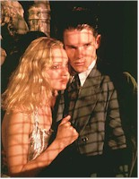

Welcome to Gattaca, a land in the "not-too-distant" future where discrimination is "down to a science," or perhaps attributed just to science itself. It’s a world where your resume is "in your genes", where social winners and social losers are determined not by popularity, but by your genetic code. In this world, "natural" childbirth means getting the right pre-natal mixture of DNA and behavioral traits; it’s called giving the child "the best possible start," but it really means condemning those born without genetic intervention (the so-called "invalids") to a life as servants to those above.
Jerome Morrow (Hawke) is, thankfully for him, one of those blessed with genetic superiority, and part of an even smaller subset of the privileged: he is an astronaut, about to take off on a mission to Titan, a feat that is possible once every seventy years. Needless to say, Morrow also bears a remarkable resemblance to your average dream date: handsome, height-weight proportional, as the personal ads call it, considerate, and a man of means. He has been taken under the wing of Director Joseph (Vidal) , who is in charge of the Titan mission, with all of the personal attention such privilege implies. As if all of this were insufficient, he has attracted to himself the attentions of the even more beautiful Irene (Thurman), a co-worker who has only one defect: a slight heart problem. In all, Morrow is a perfect example of future man.
Two shadows threaten to undermine Morrow’s lifelong dream of intergalactic travel. The least of his concerns involves the discovery that the Director of the Gattaca program has been found murdered in his office. Normally, the arrival of detectives (Dean and Arkin) who are displaying the ruthlessness of Jauvert shouldn’t bother an innocent man, except that Jerome isn’t innocent. He hasn’t committed murder, but a crime far worse. Jerome Morrow is, in Gattaca’s parlance, a "borrowed ladder"; he is an invalid upstart who is masquerading as one of the anointed. Jerome’s real name, we learn in a prolonged flashback, was Vincent. Vincent was burdened all of his life with a weak heart (and an expected life span of 30.2 years) attention-deficit disorder and a deficit of love from his parents, who were inclined to favor their second, genetically-improved son. Only after Vincent defeats his brother in a swimming match does he believe that his ambitions are possible – but only with deception. He confronts a genetic broker named German (Shalhoub) who sets him up with the real Jerome Morrow (Law). The first Morrow has slid far from the brilliant future intended for him, courtesy of an accident that destroyed his ability to walk, and his copious use of alcohol to kill the emotional pain. But Morrow still has something to sell in the form of his genetic fingerprints, and blood and urine, all of which are incontrovertible evidence of his worthiness to live among the mighty. The broker assures Vincent, "You could go anywhere with this guy’s helix tucked under your arm," and Vincent does.
Of course, this transformation has not taken place without cost: not only must Vincent, now Jerome, support the old Jerome, but the morning ritual involved to turn Vincent into Jerome is torturous. Every day, before leaving the house, Vincent must scour himself to remove as many extraneous skin cells as possible, dye his hair, comb out loose hairs insert colored contact lenses, install fake fingerprints filled with the old Eugene’s blood to evade the personnel detectors and store some of Eugene’s urine in a secret pouch in preparation for random urine tests. The murder of the director threatens to blow apart the new Jerome’s carefully-constructed present. While standing outside the Director’s door, Jerome/Vincent inadvertently leaves a part of his old self behind. The detectives locate it and assume that the murder suspect is an "invalid." Once Jerome is alerted to the detectives’ theories, his behavior becomes erratic, alarming his co-workers and Irene, who suspects him of the murder even as she becomes more involved with him. All Jerome/Vincent can see is Titan and his opportunity slipping away, along with his life.
There is a chilling timelessness to the modern world of Gattaca. First-time feature director Niccol has, if you’ll pardon the expression, conceived of a world that is at once recognizably modern and contemporary; the idea of a future not-so-distant is vital to conveying the potentially sinister consequences that might ensue from the current era’s fascination with the promises offered by genetic engineering. An increasing knowledge about genetic constructs, combined with a fanatical drive for perfection in all things underwritten in no small part by the influential social cohort known as the Boomers, not to mention the eternal human fear of death, has led to an undercurrent that can best be described as quietly hysterical. At times there seems to be only the faintest of moral and ethical restraints standing in the way of those who believe in the theory that, just because we can control the results of human reproduction pre-natally, we should, regardless of the condition under review. In this sort of environment, the correction of a fatal condition such as Tay-Sachs (if it were possible) can get lumped together with the desire for taller offspring in the hands of the unscrupulous practitioner. As Gattaca aptly demonstrates, it’s a short step from merely wanting more height to the removal of less desirable personality traits, resulting in a race of emotional automotons. Mapping the human genetic structure is a fine and noble calling, in theory, but in practice, and without some effective safeguards in place, it could, and probably would, lead to just such a society Unfortunately for the film, this obsession with perfection does not explain precisely why Irene’s parents would not have corrected her heart condition, or how, as the bearer of such a severe physical defect, she could be considered as part of the elite. Granted, the weakness of Irene’s heart, twinned as it is with Vincent’s condition, is a touching motif, but it is also somewhat inconsistent with the story line’s requirements. In the overall scheme of things, it’s an easy error to overlook, yet it is raised often enough in the course of the film to make total avoidance difficult.

There are very few special effects employed in Gattaca, which helps to convey the unease so inherent in this situation. Niccol and company don’t attempt to overplay their design hand by going for exotic, previously unknown, decors. Instead, and quite correctly, they stick to the extremes of well-known modern style, with lots of stainless steel, slick, black surfaces and some wood inlays with obvious Art-Deco leanings in the business and domestic settings and reserve the neo-Classical look, festooned with touches of gilt-edged roccoco, for those settings that are meant to be other-worldly and dedicated to fantasy, such as nightclubs; think of the design format in Gattaca as the reversal of so-called traditional decorating strategies. Nevertheless the thoughtfulness dedicated to the décor is appropriate in a thematic sense: where else can fantasy take place in a regimented, automated society but in public? The effect of this type of design strategy recalls other science-fiction films with social concerns such as Metropolis, which had sets whose details contained the exaggeration, but retained a then-contemporary (1927) look. It’s difficult to look at the realistic, dystopian world depicted in Gattaca and then to dismiss the film’s omnipresent, yet latent, fear of social repression in the name of social engineering as mere paranoia.The performances in Gattaca also contribute to a sense of unease in the audience, since, in order to inspire sufficient levels of unease in the audience, the actors have to make the insane mentality of this world seem normal. As the star of the piece, Ethan Hawke is obliged to carry the picture’s credibility, which he does commendably. Ably assisted by Law and Thurman, Hawke deftly captures the ambiguity and ambition of Jerome/Vincent. His is a human ambition, with an American slant; only in America can you completely transcend your past. He is one of us and we can empathize with his desire to have and be something other than what was seemingly ordained by our origins. Thurman is both quietly eloquent and luminously beautiful; why would our hero ever want to pass up the chance to win her? Law, as the embittered ex-Superman, is a perfect foil to the genetically-challenged, ambitious Vincent. Gattacahas one of the best mixes of subtle social commentary and entertainment that has been seen in a Hollywood release in years, and it doesn’t need any of Huxley’s soma to give it plausibility.